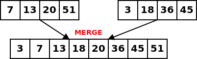

Alice and Bob are both working on organizing a list of student grades. Alice has a list of grades already sorted in ascending order. Bob has another sorted list of grades. Now they want to combine both lists into a single sorted list.
Since you're good at programming, they’ve asked you to help merge their two sorted arrays into one — also in ascending order — without using any built-in sort function.
Can you help them?
The first line of input contains an integer N (0 ≤ N ≤
10,000) — the number of elements in Alice's array.
The second line contains N integers in ascending order — the elements of Alice's array.
The third line contains an integer M (0 ≤ M ≤
10,000) — the number of elements in Bob's array.
The fourth line contains M integers in ascending order — the elements of Bob's array.
A single line with N + M integers representing the merged, sorted array in ascending order.
Input
5 2 5 6 8 9 7 1 3 4 7 10 15 17
Output
1 2 3 4 5 6 7 8 9 10 15 17
Alice e Bob estão a organizar uma lista de notas de alunos. Alice tem um vetor de notas já ordenado por ordem crescente. Bob tem outro vetor, também ordenado. Agora querem juntar os dois vetores numa única lista, também ordenada.
Como tu és bom em programação, pediram-te ajuda para juntar os dois vetores ordenados num só — também por ordem crescente — sem usar nenhuma função de ordenação já pronta.
Consegues ajudá-los?
A primeira linha do input contém um inteiro N (0 ≤ N ≤ 10.000) — o número de elementos no vetor da Alice.
A segunda linha contém N inteiros em ordem crescente — os elementos do vetor da Alice.
A terceira linha contém um inteiro M (0 ≤ M ≤ 10.000) — o número de elementos no vetor do Bob.
A quarta linha contém M inteiros em ordem crescente — os elementos do vetor do Bob.
Uma única linha com N + M inteiros representando o vetor resultante da junção, ordenado por ordem crescente.
Input
5 2 5 6 8 9 7 1 3 4 7 10 15 17
Output
1 2 3 4 5 6 7 8 9 10 15 17